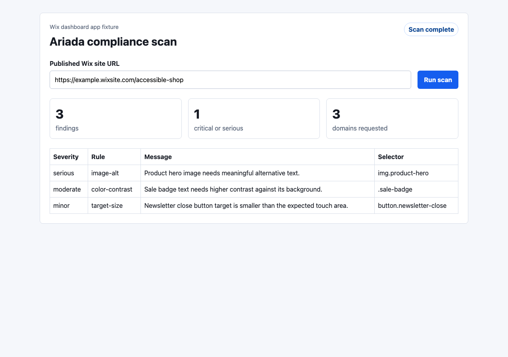

S10 distribution channel evidence
Ariada Wix app
The S10 channel is a Wix dashboard app surface for non-technical site owners and agencies. The adapter is intentionally thin: the Wix panel collects the published site URL, calls Ariada hosted scan semantics, and renders the returned compliance findings. Scanner logic stays in Ariada hosted API or CLI-owned services.
What is Wix?
Wix is a hosted website builder and app ecosystem used by small businesses, creators, agencies, and non-technical operators to publish sites without owning the underlying web stack. The relevant Ariada surface is the Wix dashboard: a site owner or agency opens an installed app, points it at the published Wix site, and expects an understandable compliance result rather than a developer CLI workflow.
Why this is a separate Ariada channel
Wix is separate from framework and CMS adapters because the app cannot assume arbitrary local Node execution, direct file access, or a normal package-install workflow inside the customer site. The real channel must be a dashboard app that calls a hosted Ariada scan endpoint and then stores or displays evidence for the installed Wix site. That makes S10 a hosted-service connector, not a scanner implementation.
Who pays / what value they buy
| Non-technical Wix site owner | Buys a simple compliance panel that says what is wrong on the published site and gives a reviewer-ready artifact without asking them to run a CLI. |
|---|---|
| Agency/designer | Buys repeatable evidence across client Wix sites, reducing manual audit handoff time and making accessibility remediation easier to package as a service. |
| Compliance owner | Buys traceable WCAG/EAA evidence, raw scan JSON, screenshots, and repeatable report links that can support procurement or release review. |
| Platform/release owner | Buys the hosted scan connector, authentication, retention, and policy controls needed to make Wix-site checks part of a release or governance workflow. |
Channel User Preferences
| Low setup | Open dashboard, scan the published site, read findings. |
|---|---|
| Agency repeatability | One app surface should work across multiple client sites with per-site evidence. |
| Plain remediation | Findings need selector, rule, severity, and message fields for handoff. |
Competitors and Narrow Evidence Competitors
Broad competitors are Wix SEO/accessibility tooling, agency manual audits, and accessibility overlays. The narrow evidence competitor is any Wix-compatible service that produces reviewer-ready scan artifacts from a dashboard workflow. This fixture does not claim marketplace parity; it proves Ariada can own the evidence layer.
Implemented vs not implemented
| Local dashboard fixture | Implemented. fixture/index.html renders a Wix-dashboard-style panel with site URL input, scan trigger, summary metrics, and finding table. |
|---|---|
| Mocked hosted scan | Implemented. scripts/mock-server.mjs serves POST /api/ariada/scan and returns fixture/mock-scan.json as the local stand-in for Ariada hosted scan semantics. |
| Adapter | Implemented. src/adapter.js builds the hosted scan request, normalises scan JSON, and renders findings without copying scanner rules. |
| Tests and evidence | Implemented. Unit tests, local E2E, raw JSON, saved logs, link validation, screenshot validation, and this HTML report are present. |
| Real Wix app registration | Not implemented. Requires Wix developer account access, app registration, and dashboard extension configuration. |
| Signed instance validation / OAuth | Not implemented. The real app must validate Wix app instance context and use the required permission/OAuth model. |
| Production Ariada hosted API credentials | Not implemented. The fixture uses a mocked endpoint because production hosted scan URL, auth, and tenant mapping are not available in this branch. |
| Wix App Market submission | Not implemented. App Market packaging, listing copy, review, and approval remain founder-owned human gates. |
Domains Roadmap
| Accessibility | Implemented in fixture response; first commercial wedge for EAA/WCAG review. |
|---|---|
| Privacy | Requested by adapter contract; blocked until hosted API exposes privacy findings for Wix sites. |
| Security | Requested by adapter contract; blocked until hosted API exposes security findings for Wix sites. |
| SEO / structured data / performance | Roadmap domains after hosted scan artifact retention exists. |
Technical Connectors
| Wix dashboard panel | fixture/index.html represents the dashboard page surface. |
|---|---|
| Ariada hosted API | POST /api/ariada/scan is mocked locally and mirrors a future hosted endpoint. |
| Shared adapter contract | src/adapter.js builds the request and normalises scan JSON without scanner rules. |
| Wix platform | Official Wix docs describe self-managed apps, Wix APIs, app instance query parameters, and dashboard SDK requirements; those remain account-gated for this branch. |
E2E Test Adequacy
The automated E2E starts the local fixture server, loads the dashboard route, calls the mocked hosted scan endpoint, verifies three findings, and writes raw JSON. Browser verification then opens the dashboard with the same scan flow autorun and captures the rendered panel. This is adequate for local adapter behavior; it is not a Wix App Market or real dev-site install test.
Artifacts
Test report · Lint log · Unit test log · E2E output · Evidence build log · Link validation log · Screenshot validation log · Raw scan JSON · Browser flow notes · Direct screenshot PNG
{kind=link}

Blockers
| Hosted API | No production Ariada hosted scan endpoint is available in this branch. |
|---|---|
| Wix account | Wix CLI/dev-account access is required to scaffold, register, and test a real dashboard app inside Wix. |
| Marketplace review | Wix App Market submission and review are founder-owned human gates. |
Distribution and Monetization Next Steps
- Create the Wix app in a developer account and register a dashboard page that points to the Ariada hosted panel.
- Connect the production hosted scan API with signed instance validation and per-site evidence retention.
- Publish a docs page for agency operators and price the channel as part of hosted evidence retention, not as a standalone scanner fork.
Sources
| Wix self-managed apps | Official Wix Developers docs, accessed 2026-07-01, primary source, high reliability. |
|---|---|
| Wix APIs | Official Wix Developers docs, accessed 2026-07-01, primary source, high reliability. |
| App instances | Official Wix Developers docs, accessed 2026-07-01, primary source, high reliability. |
| Dashboard SDK changelog | Official Wix Developers changelog, accessed 2026-07-01, primary source, high reliability. |
Raw Logs
E2E
GET /dashboard -> 200 POST /api/ariada/scan -> 200 scan findings -> 3
Browser Flow
Browser verification: PASS Date: 2026-07-01 Fixture URL: http://127.0.0.1:4177/dashboard?autorun=1 Browser: Google Chrome headless with isolated temporary user data directory Action: loaded the Wix dashboard fixture, autoran the mocked Ariada hosted scan, and captured the rendered post-scan panel. Screenshot: scan-evidence/screenshots/wix-dashboard-panel.png Screenshot validation: 1280x900, 66064 bytes, pixel variance 2083.47; not blank. Browser MCP note: Chrome DevTools MCP could not attach because its shared profile was already locked by another running browser. A separate headless Chrome profile was used instead.
Update:
Author: GAUSS (orchestrator)
Date: 2026-07-01